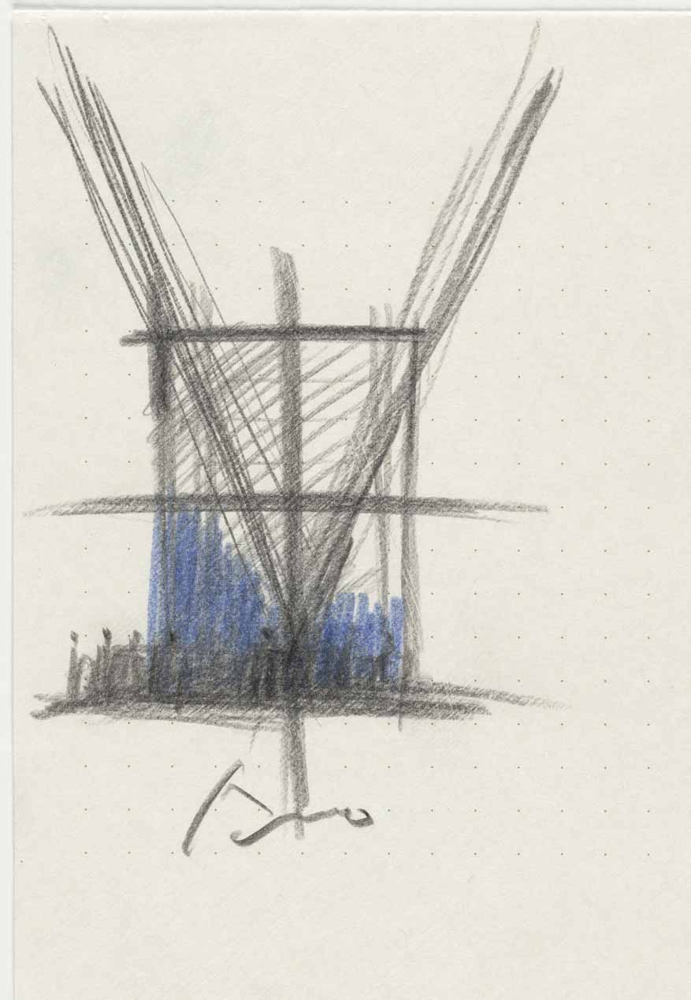
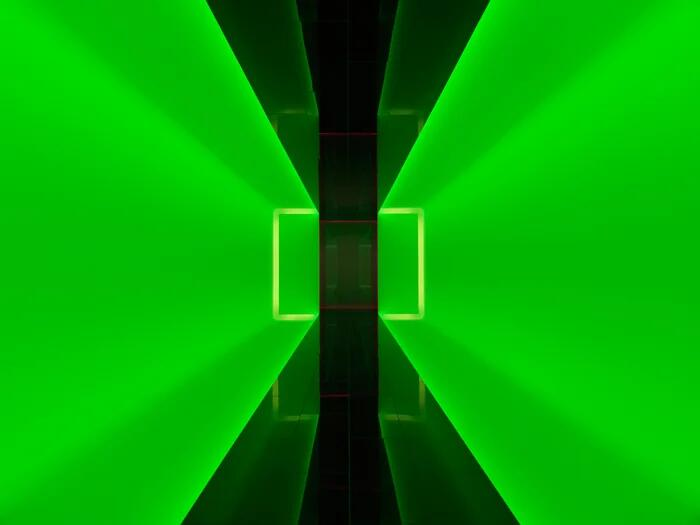
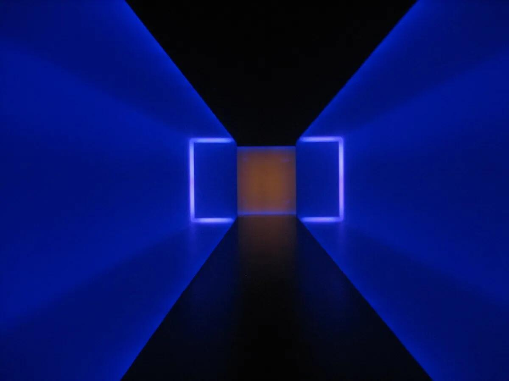
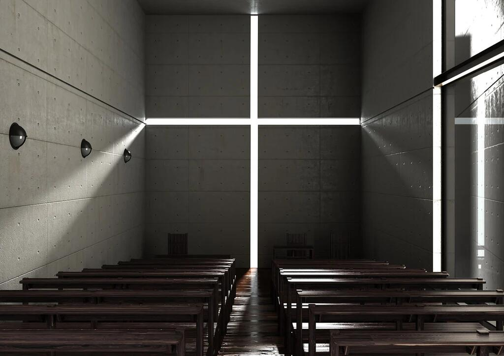
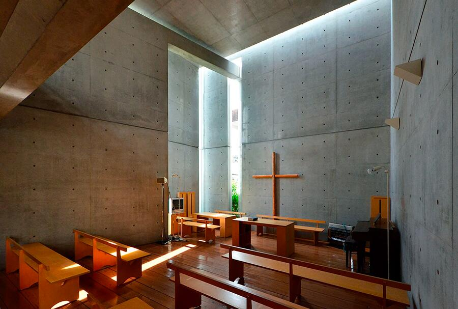
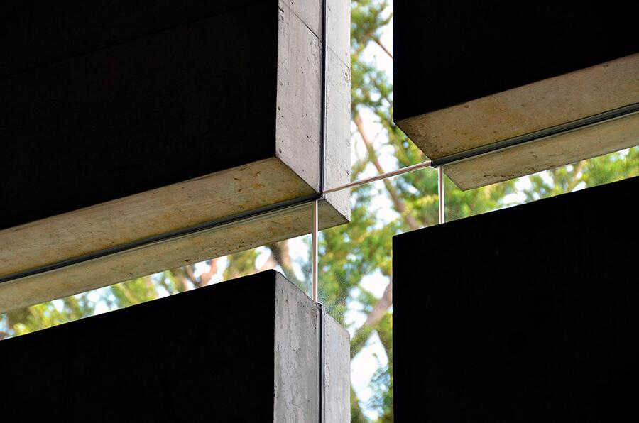
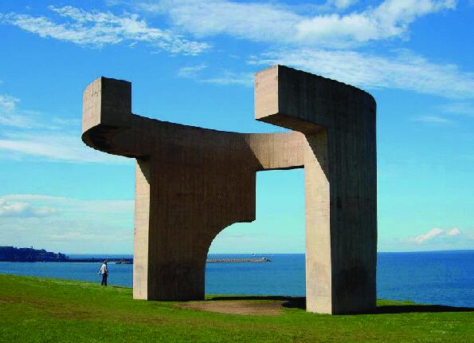
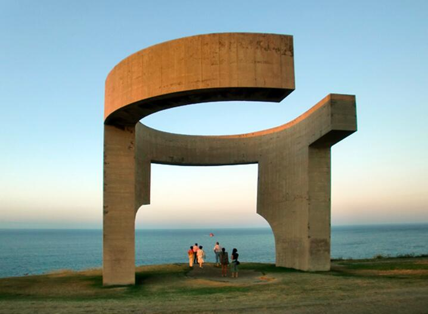
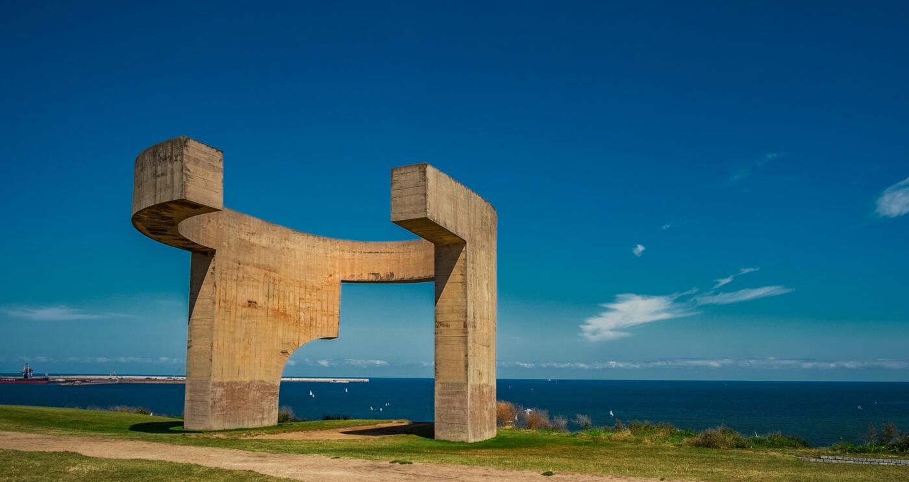

Lo spazio si configura attraverso relazioni percettive. Profondità, scansioni, pieni e vuoti, direzioni e intensità luminose compongono una struttura dinamica che la mente riconosce prima ancora che esista un progetto. L’immagine non rappresenta una forma, ma rivela una logica nascosta dello spazio che predispone l’atto compositivo.


A Frontal Passage è un’installazione luminosa immersiva di James Turrell che utilizza luci fluorescenti per manipolare la percezione dello spazio, del colore e della profondità da parte dello spettatore. L’opera fa parte della serie Wedgeworks dell’artista ed è attualmente conservata nella collezione del Museum of Modern Art (MoMA) di New York.
Per sperimentare A Frontal Passage, il visitatore entra in una camera buia. All’interno, una “parete” radiosa ma nitidamente definita di luce rossa pura e saturata sembra dividere la stanza in diagonale. La luce sembra avere una densità fisica e una superficie piatta, come se fosse un oggetto solido o un rettangolo dipinto su una parete.
Gli elementi chiave dell’esperienza includono:



I disegni concettuali ad acquerello di Steven Holl sono fondamentali per la sua metodologia progettuale, fungendo da scintilla iniziale e modalità di pensiero per quasi tutti i suoi progetti. Questi piccoli schizzi, spesso di dimensioni 5x7 pollici, catturano i fenomeni dello spazio, della luce e delle sensazioni prima dell’inizio di qualsiasi costruzione.
Il ruolo degli acquerelli nel suo processo creativo



L’opera di Eduardo Chillida, intitolata Elogio del Horizonte, è una scultura monumentale in cemento inaugurata nel 1990 a Gijón, in Spagna. L’opera, che si affaccia sull’Oceano Atlantico, è pensata per incorniciare l’orizzonte e amplificare il suono del mare attraverso le sue forme. Nonostante le sue dimensioni imponenti, l’intento dell’artista non era quello di dominare lo spazio, ma di interagire con esso.